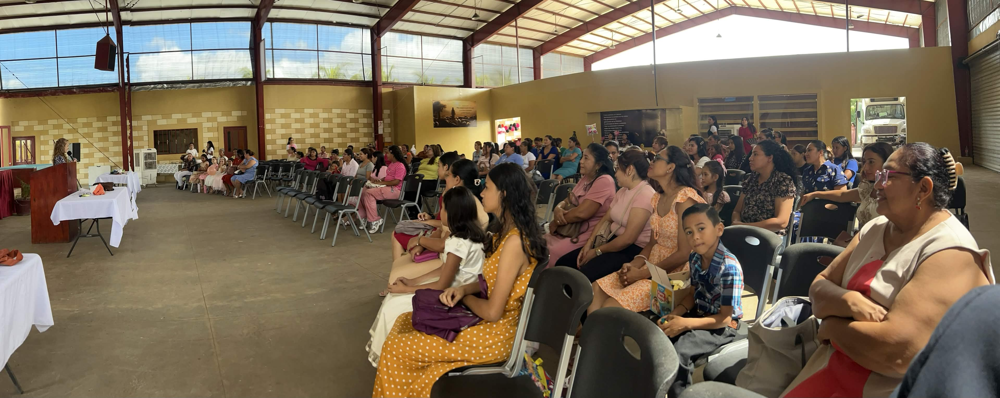
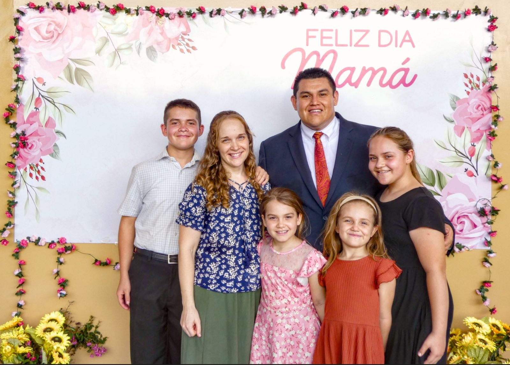

Dear Prayer Partners in Christ,
Grace and peace to you from the Portillo family. We continue to be abundantly blessed by your faithful prayers and generous support as we serve Christ here in Nicaragua. Thank you for standing with us in ministry.
Celebrating God's Faithfulness
Throughout June 2026, we have been reminded of God's incredible faithfulness in our lives and ministry. From special services to community outreach, we have witnessed His hand at work. Our church family continues to grow in faith and dedication to serving our neighbors with the love of Christ.
Celebrating God's Faithfulness in Our Mothers
This month we gathered to celebrate our church mothers in a special Mother's Day service. It was a wonderful time to honor the faithful women who serve so sacrificially in our congregation and community. We were reminded of their dedication to the Lord and their influence in shaping our church family.


A Testimony of God's Inclusive Love
One of our church members has been learning to communicate through sign language. Recently, she had the wonderful privilege of sharing the Gospel with someone deaf and leading them to Christ—using the gift of sign language she has been developing. What a beautiful testimony to God's heart to reach every person, breaking down barriers and meeting people where they are. This is the Gospel in action!
Building for Ministry Growth
God is providing resources for important facility improvements to serve our community better. We are currently constructing a new on-ramp to our property, making our facilities more accessible to all who wish to worship and serve with us. Additionally, we have recently completed a beautiful upgrade to our main auditorium with a new audio visual booth. These improvements enhance our worship experience and expand our ministry capabilities for reaching more people with the Gospel.


Thank you for your partnership in the Gospel. Your prayers, support, and encouragement mean more than words can express. We covet your continued intercession as we seek to glorify Christ and advance His Kingdom here in Central America.
Ricardo & Family
Nicaragua Ministry